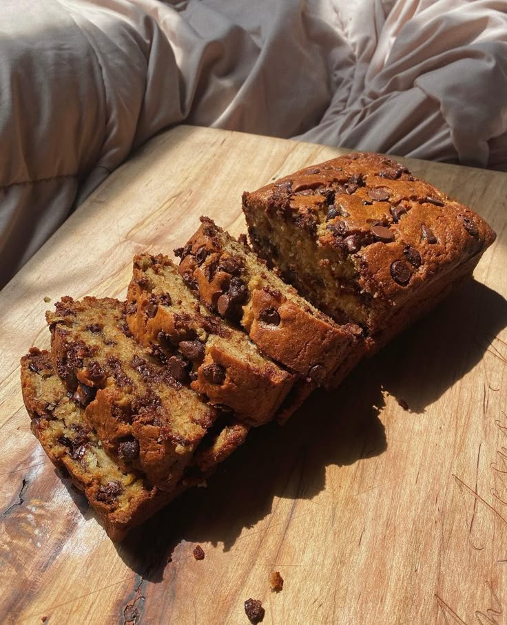

This is a type of moist sweet bread made from mashed bananas.
It is widely beloved around the world as a comforting homemade treat.
The texture of this meal is typically dense, moise and tender crumb.
It feautures a rich, sweet, and distinctly warm banana flavor,
often enhanced by warm spices like cinnamon, nutmeg, or vanilla extract.